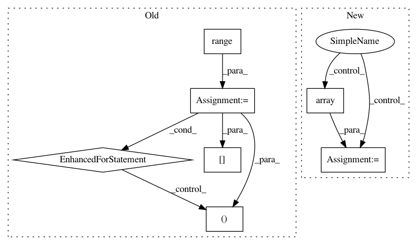

244aafdcf89ae814975c8c4e3faf0bd4995c7878,rllib/utils/exploration/tests/test_curiosity.py,OneHotWrapper,observation,#OneHotWrapper#Any#,29
Before Change
colors = one_hot(obs[:, :, 1], depth=6)
states = one_hot(obs[:, :, 2], depth=3)
// Is the door we see open?
for x in range(7):
for y in range(7):
if objects[x, y, 4] == 1.0 and states[x, y, 0] == 1.0:
print("Door OPEN!!")
all_ = np.concatenate([objects, colors, states], -1)
ret = np.reshape(all_, (-1, ))
direction = one_hot(
np.array(self.agent_dir), depth=4).astype(np.float32)
After Change
self.frame_buffer.append(np.zeros((self.single_frame_dim, )))
if self.vector_index == 0:
if self.x_positions:
max_diff = max(
np.sqrt((np.array(self.x_positions) - self.init_x)**2 +
(np.array(self.y_positions) - self.init_y)**2))
self.x_y_delta_buffer.append(max_diff)
print("100-average dist travelled={}".format(
np.mean(self.x_y_delta_buffer)))
self.x_positions = []
In pattern: SUPERPATTERN
Frequency: 3
Non-data size: 7
Instances
Project Name: ray-project/ray
Commit Name: 244aafdcf89ae814975c8c4e3faf0bd4995c7878
Time: 2020-09-05
Author: sven@anyscale.io
File Name: rllib/utils/exploration/tests/test_curiosity.py
Class Name: OneHotWrapper
Method Name: observation
Project Name: uber/ludwig
Commit Name: 7d9db23a389499c2764fb850cd19f853cc3e8565
Time: 2019-08-08
Author: smiryala@uber.com
File Name: ludwig/features/image_feature.py
Class Name: ImageBaseFeature
Method Name: add_feature_data
Project Name: uber/ludwig
Commit Name: 5667af96dade79ef77194d519182d4989494b3a4
Time: 2019-08-25
Author: smiryala@uber.com
File Name: ludwig/features/image_feature.py
Class Name: ImageBaseFeature
Method Name: add_feature_data